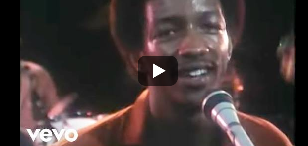

CLASSICAL MUSIC BANDS
Welcome to the world of Classical Music.I personally likes Classical Music a lot. Hope you will enjoy it as well.
Here is a list of my favorite Classical Music Bands
- Kool & The Gang
- Londonbeat
- Zapp & Roger
- Michael Learns To Rock
Kool & The Gang
Kool & the Gang is an American band formed in Jersey City, New Jersey, in 1964 by brothers Robert "Kool" Bell and Ronald Bell, with
Dennis "D.T." Thomas, Robert "Spike" Mickens, Charles Smith, George Brown, and Ricky West. They have undergone numerous changes
in personnel and have explored many musical styles throughout their history, including jazz, soul, funk, rock, and pop music.
After settling on their name following several changes, the group signed to De-Lite Records and released their debut album, Kool and the Gang (1970) .
I likes Kool & The Gang band a lot mainly because whenever I listened to their songs, it brings a relaxation mood to me especiall Cherishand Celebration.
These are some of the music by The Kool & The Gang of which I do enjoy listening to anytime.
- Cherish
- Celebration

- Get Down on It
- Summer Madness
Band Members Biography
Robert Bell
Robert Earl "Kool" Bell (born October 8, 1950), also known by his Muslim name Muhammad Bayyan,is an American musician,singer and songwriter. He is one .
of the founding members of the Band. Bell was born in Youngstown, Ohio and grew up in Jersey City, New Jersey. Along with his brother, Ronald Bell, he began playing jazz,
and in 1964 they formed a group named the "Jazziacs". They began playing at clubs in New York City under a series of different band names,
before settling on the name Kool & the Gangin 1968. He was one of the co-writers of the song Boardmeetingfrom the 2007
album Timbaland Presents Shock Value .

Ronald Bell
Ronald Nathan Bell (November 1, 1951 – September 9, 2020), also known as Khalis Bayyan,was an American composer, singer, songwriter,
arranger, producer, saxophonist and co-founding member of Kool & the Gang. The band recorded nine No. 1 R&B singles in the 1970s and 80s,
including its No. 1 pop single Celebration. The group is honored on the Hollywood Walk of Fame and was inducted
into the Songwriters Hall of Fame.
Ronald Bell composed, arranged, produced and performed some of the most popular music.He was a self-taught musician, and his
distinctive sound is on the group's horn lines, bass, synthesizer and vocals. He wrote and produced many of the Kool & the Gang's
songs, including Celebration, Cherish, Jungle Boogie,Summer Madness, and Open Sesame.
Bell died at his home in the United States Virgin Islands on September 9, 2020, at age 68.No cause was given, but the death was
described as sudden.

Londonbeat
Londonbeat is a British-American dance-pop band who scored a number of pop and dance hits in the early 1990s.
Band members are American Jimmy Helms who also had a successful solo career and sang radio jingles for Radio Hallam
and Hereward Radio in the UK, Jimmy Chambers who was borned on 29 January 1946, from Trinidad, and Charles Pierre. Former
members include multi-instrumentalist William Henshall credited as Willy M, George Chandler formerly a founding member and
frontman of Olympic Runners); Marc Goldschmitz (subsequently a member of the band Leash and Myles Kayne.
Londonbeat music band began to ring bell on my mind when I first listen to one of their songs namely I've Been Thinking About You and I was really moved. Later I search more of their songs and
it became interesting to me and I enjoyed listening to such songs.
These are among my favorite songs played by Londonbeat
- I've Been Thinking About You
- You Bring On The Sun
- A Better Love

Band Members Biography
Jimmy Helms
James D. Helms was born in Florida, United States. His grandfather was a Black Seminole and a preacher. Helms discovered
music when his aunt gave the family a radio, and went on to play trumpet in the school band. After high school he moved
to Columbus, Ohio, where he released his first single, the Jimmy Radcliffe song You're Mine You , on Sue Records in 1963.
He played with the Carl Sally band and moved to Boston, where he worked as a sessions guitarist. In the early 1960s, he
joined the US Army and played trumpet in the Fort Jackson Army Band.
After his service, Helms began to spend more time pursuing a music career in the UK. He released Ragtime Girl
on Pye records in 1975 and in 1969 he released If You Let Me on London.

Jimmy Chambers
Born in the sun of the Caribbean island of Trinidad, Jimmy Chambers arrived in England in the hope of success as a singer.
The electric London gives him every chance to join his voice to the greatest artists of the time.
In 1970, in collaboration with Robert Palmer, he co-directed the DaDa group.
After the disappearance of DADA, Jimmy records solo and hits his place successfully in the 80's dance charts.
Then he recorded an album with Paul Young and made a world tour with him and a memorable date in Wembley for LIVE AID in 1985.
After recording with major artists like Tina Turner (Break Every Rule) and Fine Young Cannibals (The Raw and the Cooked) Jimmy teamed
up with his pals Jimmy Helms, George Chandler and Willy M in 1987 and co-founded Londonbeat.
The group co-wrote a series of hits including "9 AM
which was their first British hit and reach no9 in the charts.
"Build It With Love" reach n°5 in the American Charts and "I've Been Thinking About You" whith the blast arrival at number 1 in 27 countries.
:format(jpeg):mode_rgb():quality(40)/discogs-images/A-328486-1401309837-5403.jpeg.jpg)
Charles Pierre
Charles, who describes himself as “the class clown” was born in Trinidad in no 9 plenty three. His Father was an eminent
surgeon in the West Indies
and while he had the opportunity to follow in his fathers’ footsteps, he chose to forge a career of his own for very personal
reasons, (having discussed the subject with his Dad). This advice would lead him through an amazing adventure of success, failure
and more success…
He has worked with several of the most highly respected and celebrated artists and enjoyed learning and continues to learn, from
the best. Celine Dion, Babyface, Vanessa Williams, Michael Bolton, Soul to Soul are just a few of the Artists with whom he has had
the honour of working.
Charles began his musical career an extremely young age, being taught piano by his aunt from the age of 5 years old. At the ripe
old age of 7, he taught himself to play the drums.
:format(jpeg):mode_rgb():quality(40)/discogs-images/A-189488-1533121547-2936.jpeg.jpg)
Zapp & Roger
These are the songs by Zapp & Roger
- I wanna Be Your Man

- I HeardIt Through the Grapevine

- Dance Floor
- Be Alright

BIOGRAPHY
Zapp (also known as the Zapp Band, Zapp & Roger) is an American funk band that emerged from Dayton, Ohio, United States, in 1977.
Particularly influential in the electro subgenre of funk, Zapp were known for their trademark use of the talk-box effect. The
original line-up consisted of four Troutman brothers—frontman Roger, Larry, Lester and Terry—and non-Troutman family members
Bobby Glover, Gregory Jackson, Sherman Fleetwood, Jerome Derrickson, Eddie Barber and Jannetta Boyce. Zapp also worked closely
with George Clinton and Bootsy Collins of Parliament-Funkadelic during its early stages, their support being a factor in the group
gaining a record deal with Warner Bros.
Roger Troutman
Roger Troutman (November 29, 1951 – April 25, 1999), also known mononymously as Roger, was an American singer,
composer, songwriter, producer, multi-instrumentalist and the founder of the band Zapp who helped spearhead the
funk movement and heavily influenced West Coast hip hop due to the scene's heavy sampling of his music over the years.
Troutman was well known for his use of the talk box, a device that is connected to an instrument (frequently a keyboard,
but most commonly a guitar) to create different vocal effects. Roger used a custom-made talkbox—the Electro Harmonix
"Golden Throat"—through a Moog Minimoog and later in his career a Yamaha DX100 FM synthesizer. As both band leader
of Zapp and in his subsequent solo releases, he scored a bevy of funk and R&B hits throughout the 1980s
and regularly collaborated with hip hop artists in the 1990s.
In 1981, Troutman cut The Many Facets of Roger, his first solo album. Featuring a funk cover of Marvin Gaye's "I Heard
It Through the Grapevine", which went to number 1 on the R&B singles chart, the album sold over a million copies. The album also
featured the hit "So Ruff, So Tuff", which was similar
to "More Bounce..." as were most Roger/Zapp singles during this time. The same year, Troutman recorded with Parliament-Funkadelic
on the band's final Warner Brothers' album The Electric Spanking of War Babies.
In 1984, Troutman issued his second solo album The Saga Continues..., which featured the singles "Girl Cut It Out", "It's in the
Mix" (which was dedicated to Soul Train and its host Don Cornelius), and a cover of Wilson Pickett's "In the Midnight Hour", which
featured gospel group the Mighty Clouds of Joy. In 1987, Troutman scored his most successful solo album with Unlimited!, carried by
the massive hit "I Want to Be Your Man" which rose to number 3 on the Billboard Hot 100 and number 1 on the R&B chart.
Alongside his successful career as Zapp member and solo artist, Troutman also became a producer and writer for other artists including
Shirley Murdock, whose 1985 Platinum debut featured the Roger-produced hit "As We Lay". He also produced for Zapp member Dale DeGroat
on his solo efforts. In 1988, Troutman made an appearance on Scritti Politti's third album Provision, providing talk box vocals on the
songs "Boom There She Was" and "Sugar and Spice".
Three years later, Troutman released his final solo album with Bridging the Gap, featuring the hit "Everybody (Get Up)". He worked with
Elvis Costello on the song "The Other Side of Summer". In 1989, NBA Entertainment selected Troutman among a variety of candidates to
record a tribute song called "I'm So Happy" for Kareem Abdul-Jabbar.

Michael Learns To Rock
These are the songs by Michael Learns To Rock
- Someday

- Sleeping Child

- Paint My Love
- That's Why
BIOGRAPHY
Michael Learns to Rock (also known as MLTR) is a Danish soft rock band formed in 1988. The band currently consists of Jascha Richter,
Mikkel Lentz and Kåre Wanscher. Søren Madsen was an original member of the group since its formation but left in 2000. The band has
sold over 11 million records over the course of their career, with the majority sold in Europe and Asia. Despite being Danish,
the band performs songs in English. The band has attributed its success in Asia to their drugs-free, clean-living image and to singing
in English as a second language.
Jascha Richter
Jascha Richter (born 24 June 1963) is a Danish-American singer-songwriter best known as the lead vocalist and keyboardist of the
soft rock band Michael Learns to Rock, where he composes and sings most of their songs. Some of his best known songs include
"25 Minutes", "The Actor", "Sleeping Child", "That's Why (You Go Away)", "Take Me to Your Heart", "Complicated Heart", "Someday",
"Wild Women", "Out of the Blue", "You Took My Heart
Away" and "Paint My Love".
Richter was born on 24 June 1963 in New Hampshire, United States, before his family decided to move back to Denmark,
where they settled in Århus. He holds both Danish and American citizenship. As a child, Richter started playing the
flute and cello and then the piano. He was raised with classical music, however, in his early teenage years he started
to play and compose pop music. Growing up, he listened to Elton John, Supertramp and Bee Gees among others. Richter is
known as the brain behind the Danish pop rock band Michael Learns to Rock.[1]
Richter has also released two solo albums, Planet Blue in 2002 and Where I Belong in 2006.